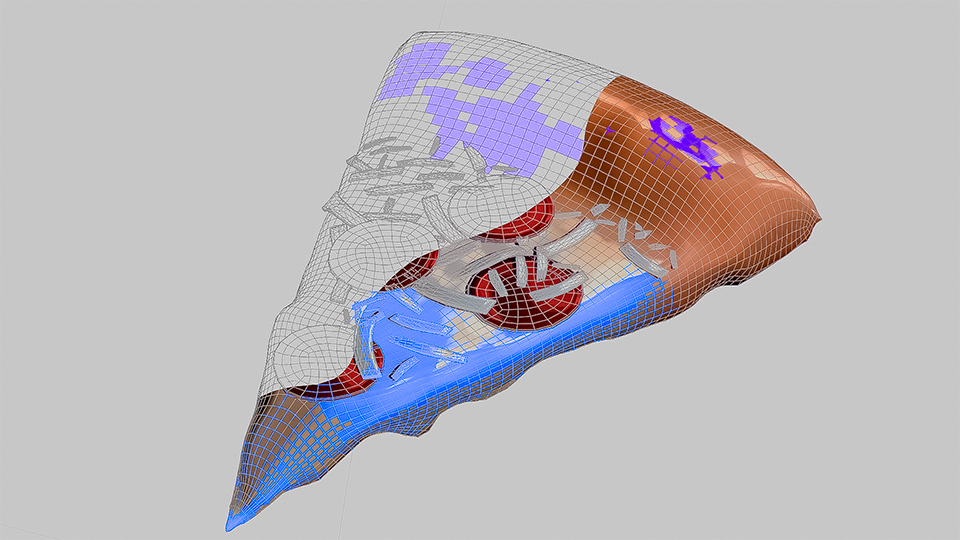

Что будет на курсе
- Уверенная работа в Blender: навигация, горячие клавиши, Edit/Sculpt/Shading.
- Моделирование сцены с нуля: рельеф, башня-ротонда, лестница и декор.
- Текстурирование через PBR: UV, roughness/normal карты и быстрые методы аддонами.
- Постановка света и камеры, чистый кадр и финальный рендер.
Чему научится человек с этого курса
- Собирать собственную 3D-сцену от идеи до готовой картинки.
- Использовать модификаторы Blender для ускорения моделинга.
- Понимать, как материалы и освещение влияют на реалистичность.
- Делать аккуратный финальный рендер и кратко презентовать работу.
План по дням
- День 0 — скачать и установить Blender.
- День 1 — моделирование: полная галерея скринов (
1.png–5.png, лестница, Edit Mode, колоннада и архив). - День 2 — текстурирование: PBR-карты (цвет, шероховатость, нормали, UV).
- День 3 — вода в сцене и сборка/уточнение башни.
- День 4 — доводка PBR и шейдер воды.
- После Дня 4 — страница поздравления и финальный рендер.